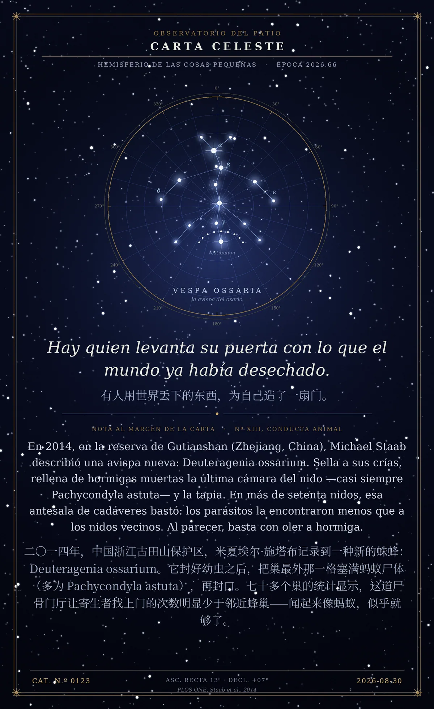

Hay quien levanta su puerta con lo que el mundo ya había desechado.
En 2014, en la reserva de Gutianshan (Zhejiang, China), Michael Staab describió una avispa nueva: Deuteragenia ossarium. Sella a sus crías, rellena de hormigas muertas la última cámara del nido —casi siempre Pachycondyla astuta— y la tapia. En más de setenta nidos, esa antesala de cadáveres bastó: los parásitos la encontraron menos que a los nidos vecinos. Al parecer, basta con oler a hormiga.